1. 円周上の石の守り方
円周を守る鍵は自分の石の「間隔」にあります。円周上の自分の石を２マス空けで配置すれば、相手が間に入ってきてもすぐに挟み返して円周上の自分の石を守ることができます。
【最強】2マス空けの配置
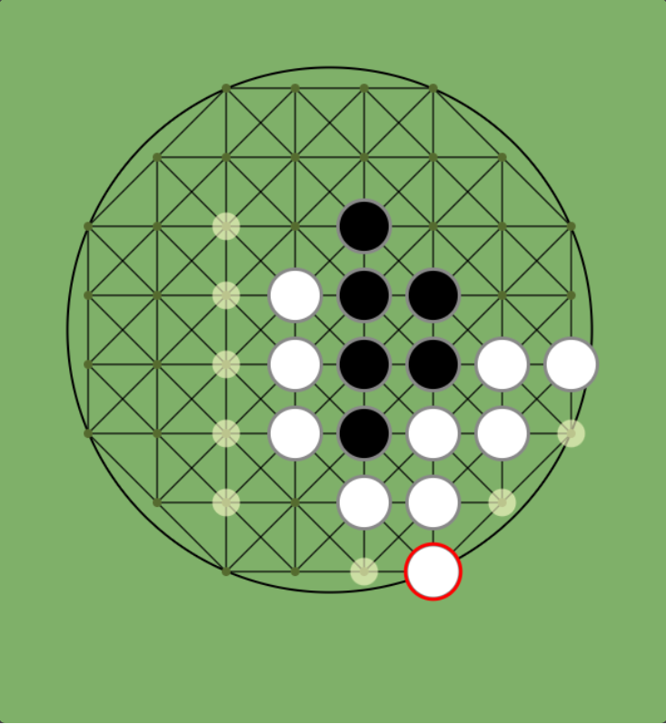
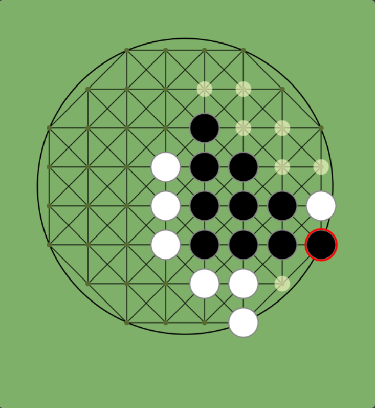
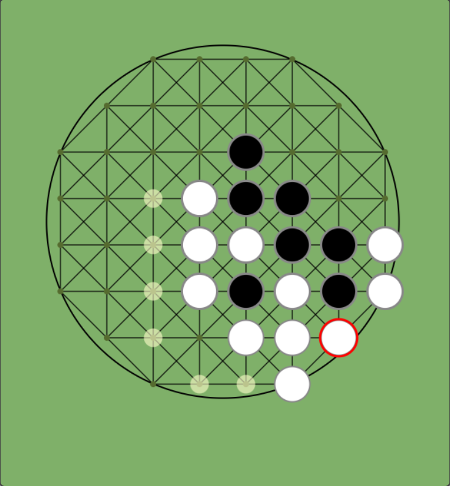
解説：間を2つ空けておくと、相手が侵入してきても即座に挟み返して円周を維持できます。
【危険】1マス空けの配置
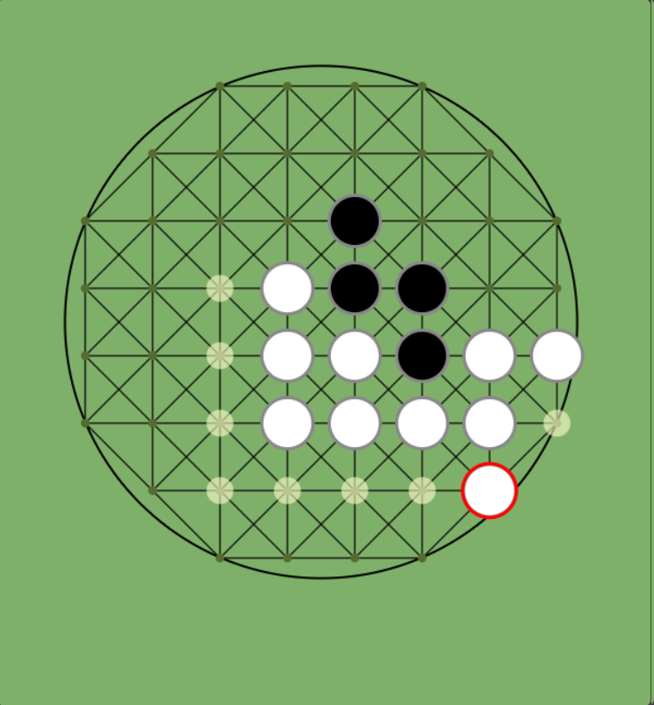
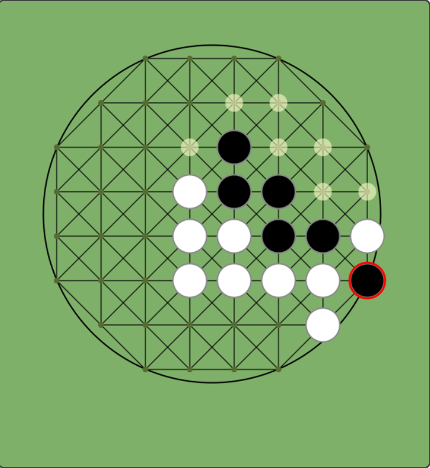
解説：間が1つ空けておくと、相手に自分の石の間に入られてしまうと、その相手の石を返すことができません。ただし、自分ー相手ー自分、となるこの配置は自分のみ円周上の横に伸びれるので若干自分が有利な配置です
【危険】3マス空けの配置
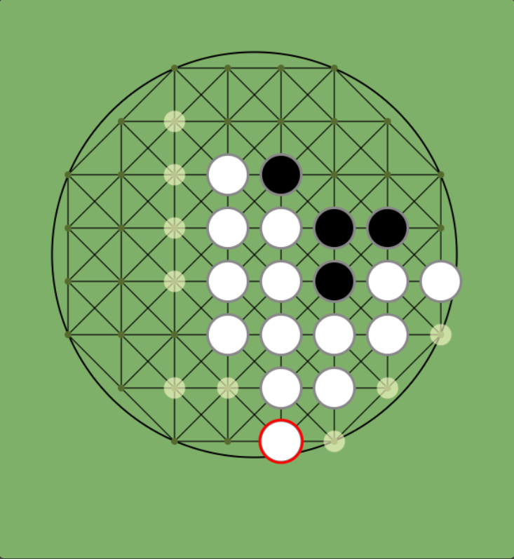
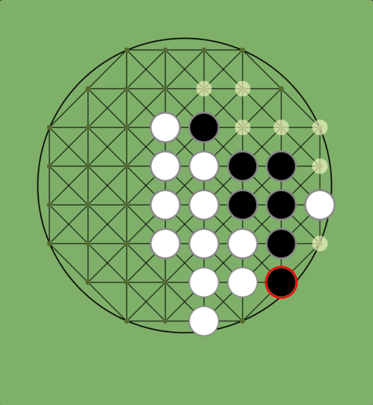
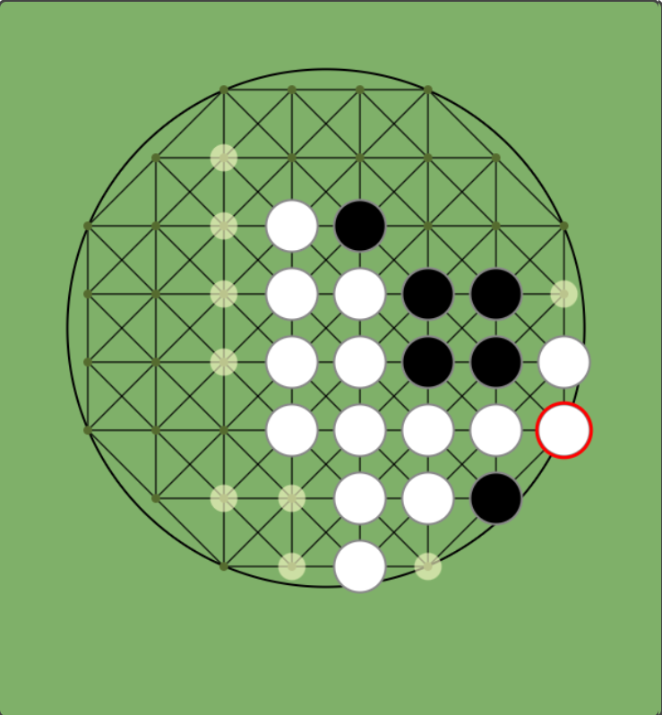
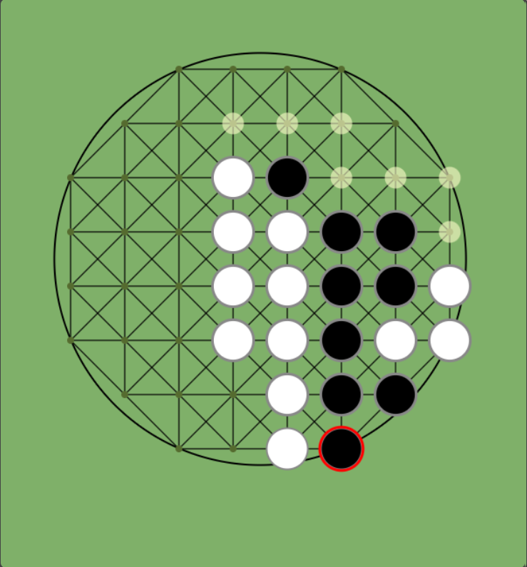
解説：間が3つ空いていると、自分の石のど真ん中に相手に打たれてしまうと、どう対応してもその相手の石を返すことはできません。ただしこれも若干自分が有利です。
2. 円周上の相手の石の取り方（2空け打ち）
相手の円周の石を奪うための方法の一つである「2空け打ち」について解説します。この方法が成功する条件は、「相手の円周上の石の2つ空けた先に自分の石を置けること」「相手の円周上の石と置いた自分の石の間に相手に石を置かれないこと」「そのあとに、相手の円周上の石と置いた自分の石の間に、相手の石にくっつけて自分の石を置けること」です。この場合、相手がどう対応しようとも相手の円周上の石を返して自分の石にできます
パターンA：相手が応戦してきた場合
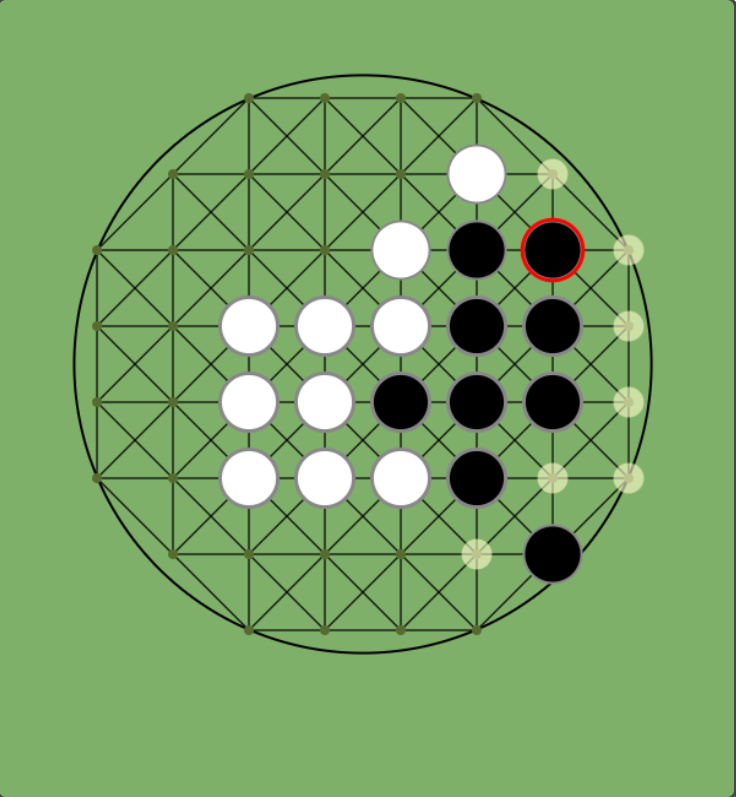
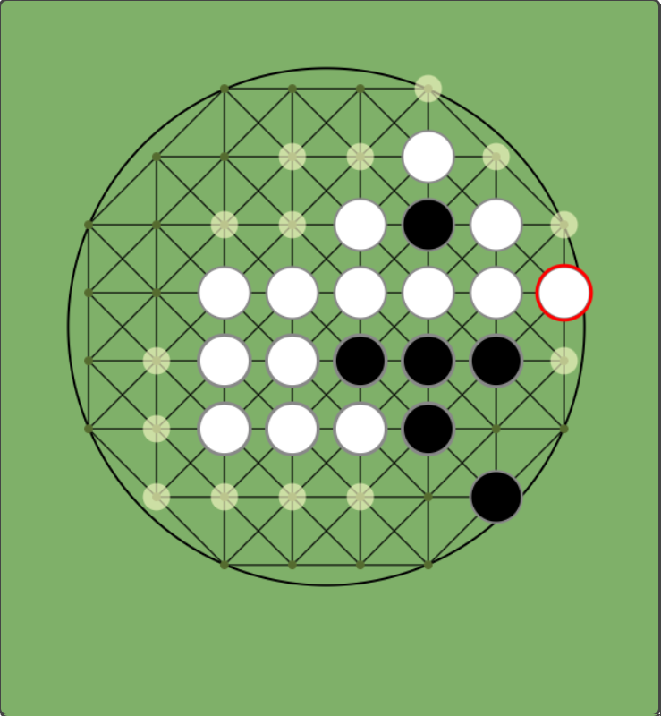
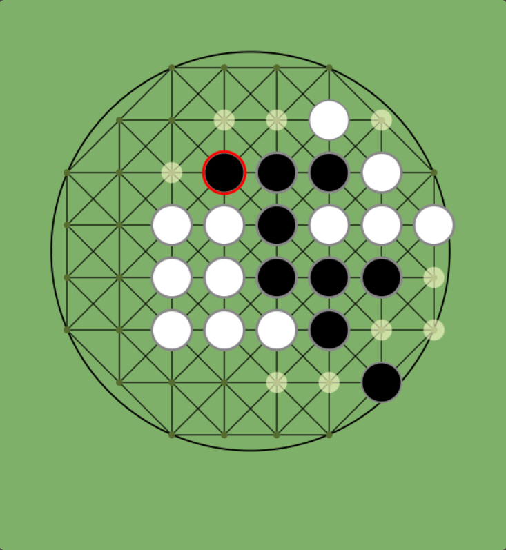
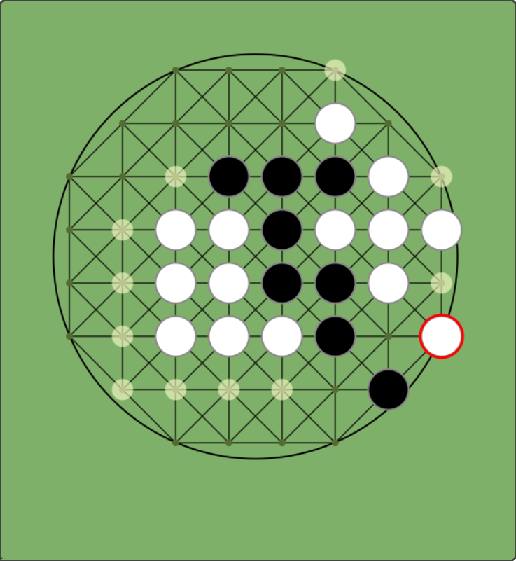
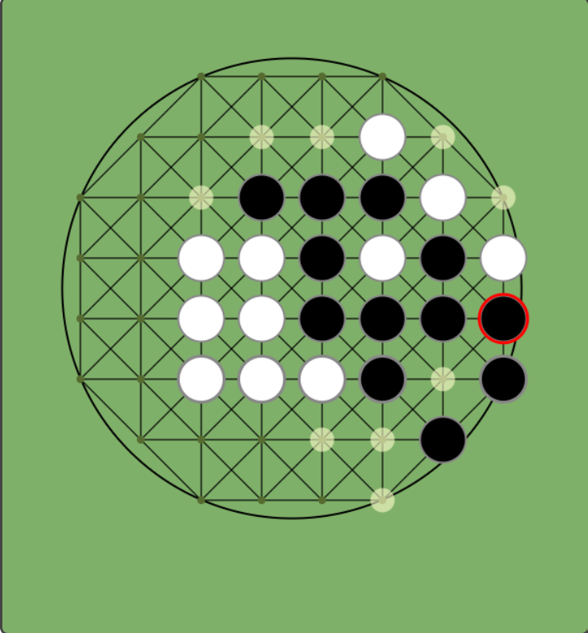
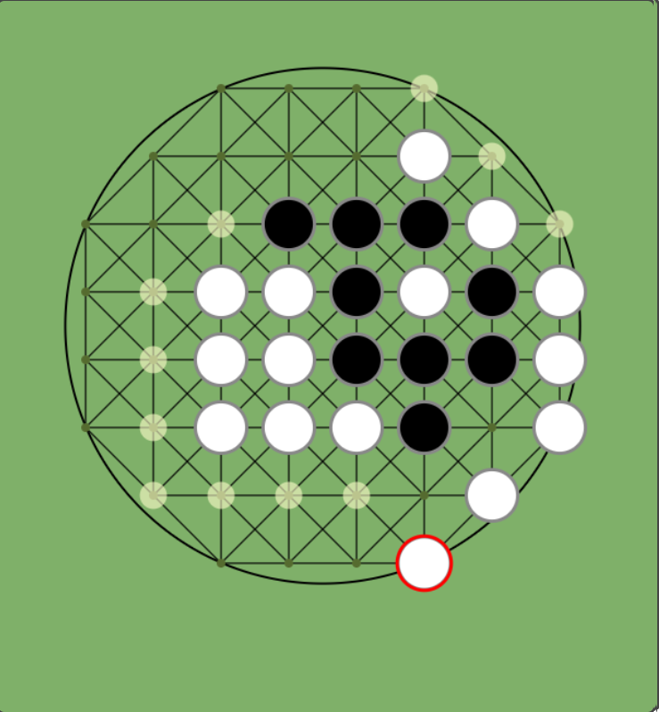
解説：相手が応戦してきても、2つ空けで自分の石があるために相手の円周上の石を返すことができます。
パターンB：相手が放置してきた場合
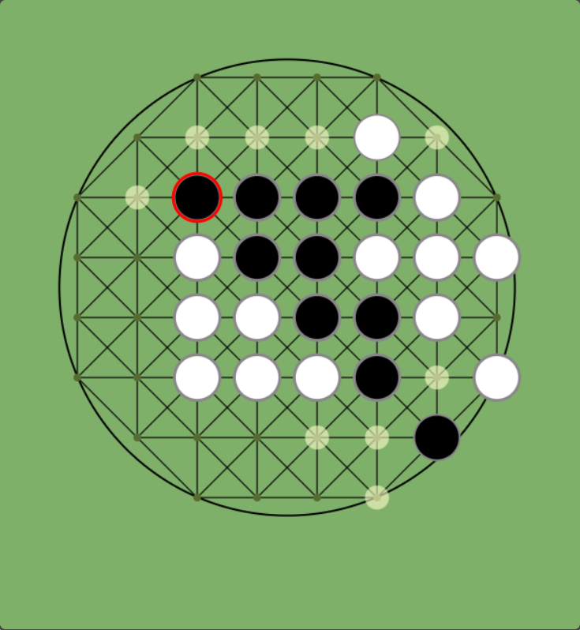
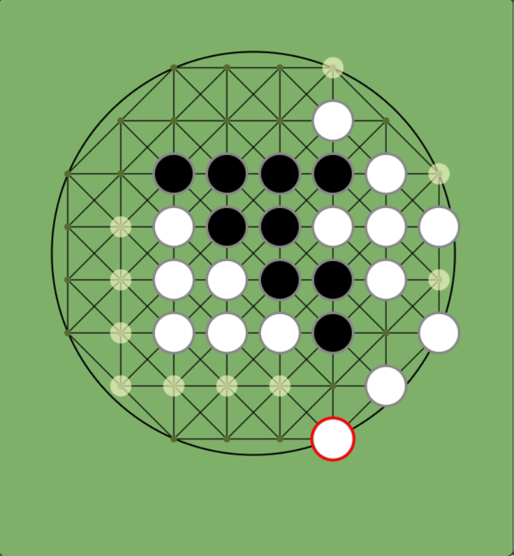
解説：相手が応戦せず円周上の石を放置してきた場合は、すぐに相手の円周上の石を返すことができます。ただしこの場合は、相手が自分の円周上の石の間に潜り込めるので、応戦してきた場合と比べると若干マイナスになります。